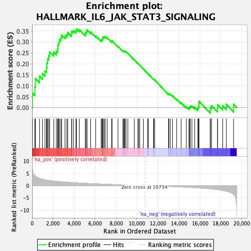
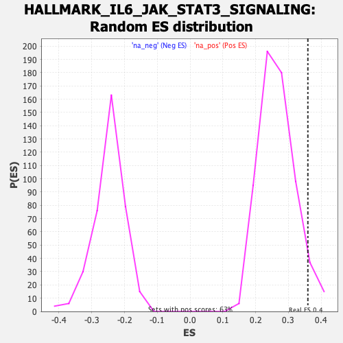

| | | Dataset | PFS |
| Phenotype | NoPhenotypeAvailable |
| Upregulated in class | na_pos |
| GeneSet | HALLMARK_IL6_JAK_STAT3_SIGNALING |
| Enrichment Score (ES) | 0.35947803 |
| Normalized Enrichment Score (NES) | 1.3531109 |
| Nominal p-value | 0.051036682 |
| FDR q-value | 0.19102547 |
| FWER p-Value | 0.714 |
Table: GSEA Results Summary

Fig 1: Enrichment plot: HALLMARK_IL6_JAK_STAT3_SIGNALING
Profile of the Running ES Score & Positions of GeneSet Members on the Rank Ordered List
| SYMBOL | RANK IN GENE LIST | RANK METRIC SCORE | RUNNING ES | CORE ENRICHMENT | | 1 | CD44 | 33 | 6.548 | 0.0655 | Yes |
| 2 | TNFRSF1B | 259 | 4.099 | 0.0959 | Yes |
| 3 | IRF9 | 313 | 3.893 | 0.1331 | Yes |
| 4 | CSF2RA | 708 | 2.950 | 0.1431 | Yes |
| 5 | ACVRL1 | 989 | 2.596 | 0.1553 | Yes |
| 6 | TNFRSF1A | 1229 | 2.350 | 0.1671 | Yes |
| 7 | EBI3 | 1370 | 2.233 | 0.1828 | Yes |
| 8 | CXCL13 | 1405 | 2.201 | 0.2036 | Yes |
| 9 | CCR1 | 1474 | 2.157 | 0.2223 | Yes |
| 10 | LEPR | 1581 | 2.098 | 0.2383 | Yes |
| 11 | CD36 | 1672 | 2.040 | 0.2546 | Yes |
| 12 | IL18R1 | 2058 | 1.831 | 0.2536 | Yes |
| 13 | HAX1 | 2309 | 1.721 | 0.2584 | Yes |
| 14 | CXCL11 | 2436 | 1.666 | 0.2690 | Yes |
| 15 | SOCS1 | 2462 | 1.655 | 0.2847 | Yes |
| 16 | CBL | 2528 | 1.625 | 0.2980 | Yes |
| 17 | JUN | 2605 | 1.594 | 0.3104 | Yes |
| 18 | CXCL1 | 2741 | 1.542 | 0.3193 | Yes |
| 19 | IL1R1 | 2818 | 1.510 | 0.3309 | Yes |
| 20 | CSF1 | 3138 | 1.398 | 0.3288 | Yes |
| 21 | CSF2RB | 3310 | 1.346 | 0.3338 | Yes |
| 22 | CXCL3 | 3398 | 1.322 | 0.3429 | Yes |
| 23 | TNFRSF21 | 3768 | 1.212 | 0.3363 | Yes |
| 24 | HMOX1 | 3771 | 1.211 | 0.3486 | Yes |
| 25 | STAM2 | 3939 | 1.164 | 0.3520 | Yes |
| 26 | STAT3 | 4176 | 1.101 | 0.3511 | Yes |
| 27 | IL7 | 4232 | 1.089 | 0.3595 | Yes |
| 28 | IFNAR1 | 4505 | 1.023 | 0.3560 | No |
| 29 | PIK3R5 | 5078 | 0.904 | 0.3358 | No |
| 30 | IL13RA1 | 5097 | 0.899 | 0.3441 | No |
| 31 | IL15RA | 5214 | 0.875 | 0.3471 | No |
| 32 | SOCS3 | 5230 | 0.870 | 0.3553 | No |
| 33 | IL2RA | 5583 | 0.799 | 0.3454 | No |
| 34 | MYD88 | 6067 | 0.710 | 0.3278 | No |
| 35 | IL10RB | 6582 | 0.620 | 0.3077 | No |
| 36 | INHBE | 6666 | 0.607 | 0.3097 | No |
| 37 | STAT1 | 6714 | 0.598 | 0.3134 | No |
| 38 | LTBR | 6751 | 0.593 | 0.3176 | No |
| 39 | IFNGR2 | 6758 | 0.592 | 0.3234 | No |
| 40 | IL4R | 6875 | 0.571 | 0.3233 | No |
| 41 | CXCL9 | 6972 | 0.553 | 0.3240 | No |
| 42 | IL2RG | 7158 | 0.522 | 0.3198 | No |
| 43 | TNF | 7582 | 0.454 | 0.3027 | No |
| 44 | IL3RA | 7626 | 0.447 | 0.3051 | No |
| 45 | A2M | 8192 | 0.366 | 0.2798 | No |
| 46 | MAP3K8 | 8657 | 0.300 | 0.2590 | No |
| 47 | CSF3R | 8742 | 0.288 | 0.2576 | No |
| 48 | CXCL10 | 8797 | 0.279 | 0.2577 | No |
| 49 | ITGB3 | 8861 | 0.270 | 0.2572 | No |
| 50 | CRLF2 | 8960 | 0.256 | 0.2548 | No |
| 51 | IL1B | 9136 | 0.230 | 0.2482 | No |
| 52 | ITGA4 | 9743 | 0.141 | 0.2184 | No |
| 53 | IL6ST | 10090 | 0.091 | 0.2016 | No |
| 54 | IFNGR1 | 10168 | 0.081 | 0.1985 | No |
| 55 | PTPN11 | 10267 | 0.066 | 0.1941 | No |
| 56 | OSMR | 10609 | 0.018 | 0.1767 | No |
| 57 | PTPN1 | 11034 | -0.041 | 0.1553 | No |
| 58 | IL17RA | 11040 | -0.042 | 0.1555 | No |
| 59 | CD14 | 11078 | -0.047 | 0.1541 | No |
| 60 | IL12RB1 | 11586 | -0.119 | 0.1292 | No |
| 61 | TGFB1 | 11600 | -0.121 | 0.1298 | No |
| 62 | PTPN2 | 11691 | -0.135 | 0.1265 | No |
| 63 | STAT2 | 13016 | -0.348 | 0.0620 | No |
| 64 | CD9 | 13046 | -0.353 | 0.0641 | No |
| 65 | CSF2 | 13183 | -0.375 | 0.0610 | No |
| 66 | IRF1 | 13392 | -0.408 | 0.0545 | No |
| 67 | CD38 | 13786 | -0.477 | 0.0391 | No |
| 68 | REG1A | 14220 | -0.558 | 0.0226 | No |
| 69 | PLA2G2A | 14713 | -0.656 | 0.0040 | No |
| 70 | PIM1 | 14960 | -0.709 | -0.0014 | No |
| 71 | CCL7 | 15032 | -0.724 | 0.0024 | No |
| 72 | IL1R2 | 15088 | -0.739 | 0.0071 | No |
| 73 | FAS | 15244 | -0.774 | 0.0071 | No |
| 74 | LTB | 15506 | -0.838 | 0.0023 | No |
| 75 | BAK1 | 15810 | -0.921 | -0.0039 | No |
| 76 | TLR2 | 15858 | -0.935 | 0.0033 | No |
| 77 | PDGFC | 15913 | -0.949 | 0.0102 | No |
| 78 | CNTFR | 15916 | -0.950 | 0.0199 | No |
| 79 | IL6 | 15925 | -0.952 | 0.0292 | No |
| 80 | DNTT | 16997 | -1.325 | -0.0123 | No |
| 81 | PF4 | 17008 | -1.328 | 0.0008 | No |
| 82 | TNFRSF12A | 17121 | -1.373 | 0.0091 | No |
| 83 | ACVR1B | 17684 | -1.660 | -0.0027 | No |
| 84 | IL17RB | 17702 | -1.671 | 0.0135 | No |
| 85 | GRB2 | 18185 | -1.989 | 0.0091 | No |
| 86 | IL9R | 18534 | -2.319 | 0.0150 | No |
| 87 | TYK2 | 19220 | -3.498 | 0.0156 | No |
Table: GSEA details [plain text format]

Fig 2: HALLMARK_IL6_JAK_STAT3_SIGNALING: Random ES distribution
Gene set null distribution of ES for HALLMARK_IL6_JAK_STAT3_SIGNALING